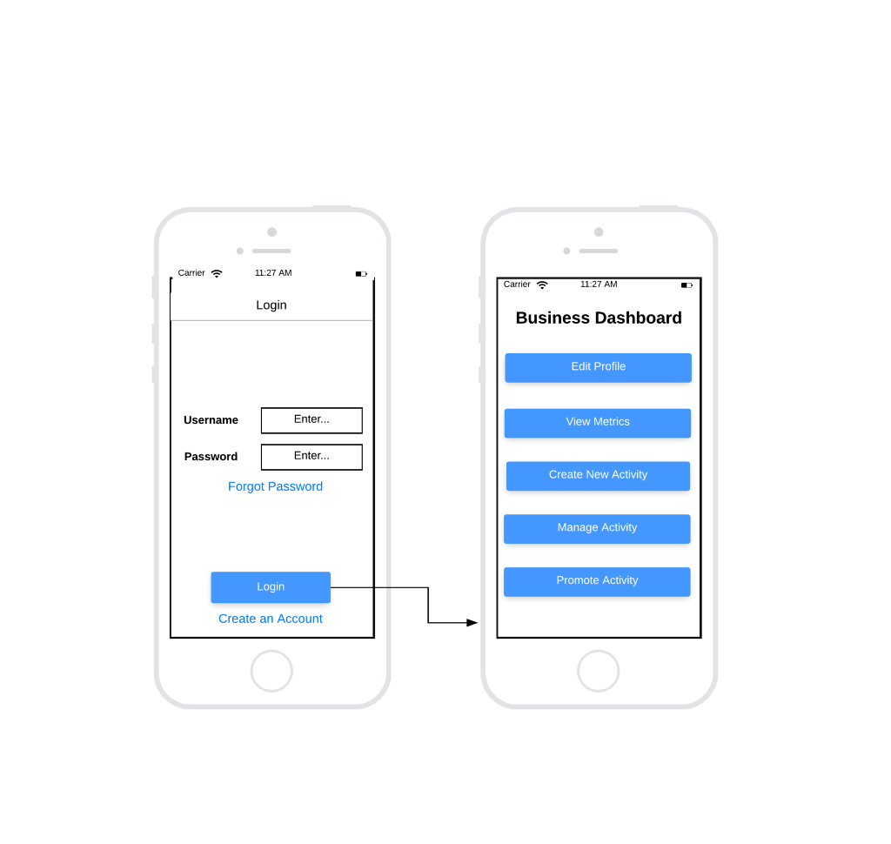
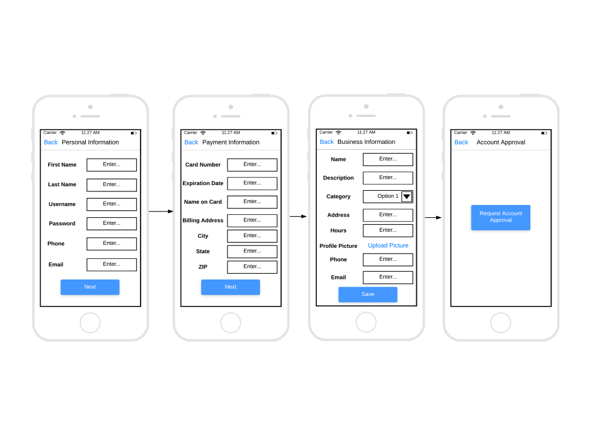
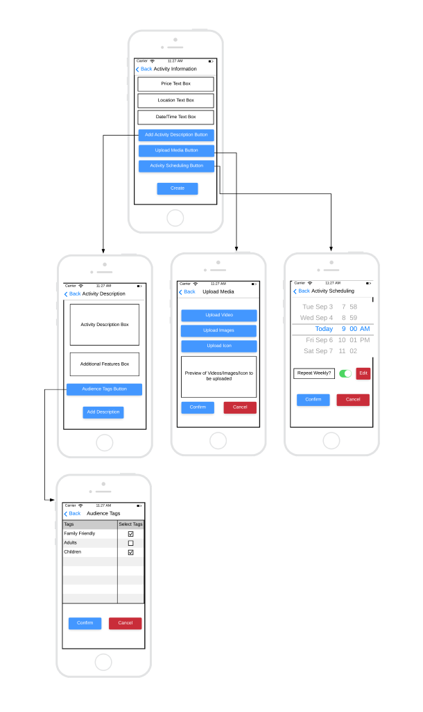
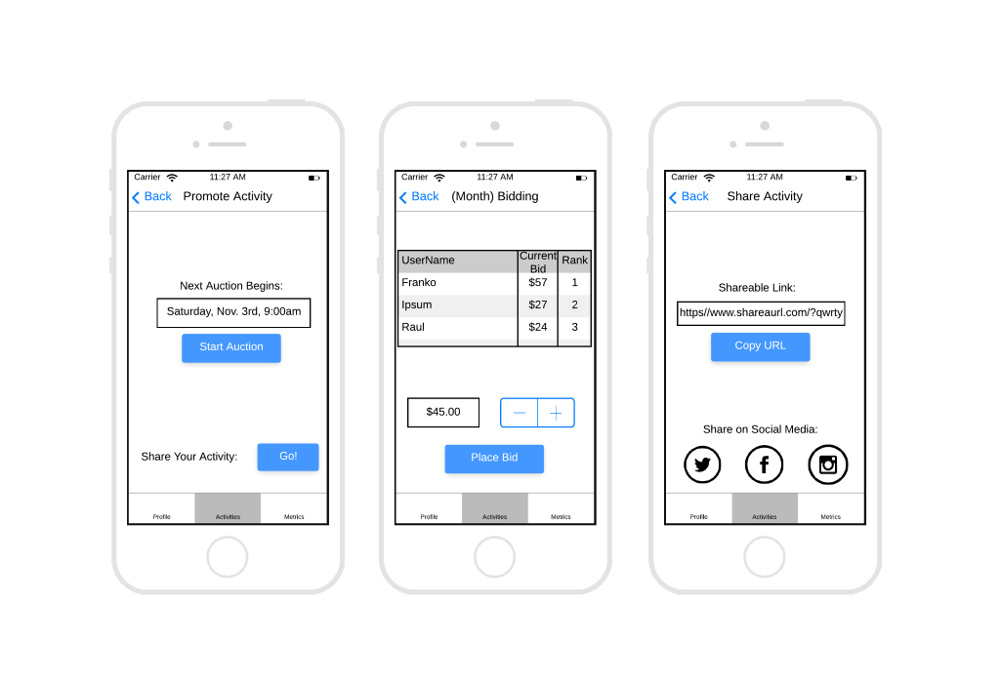
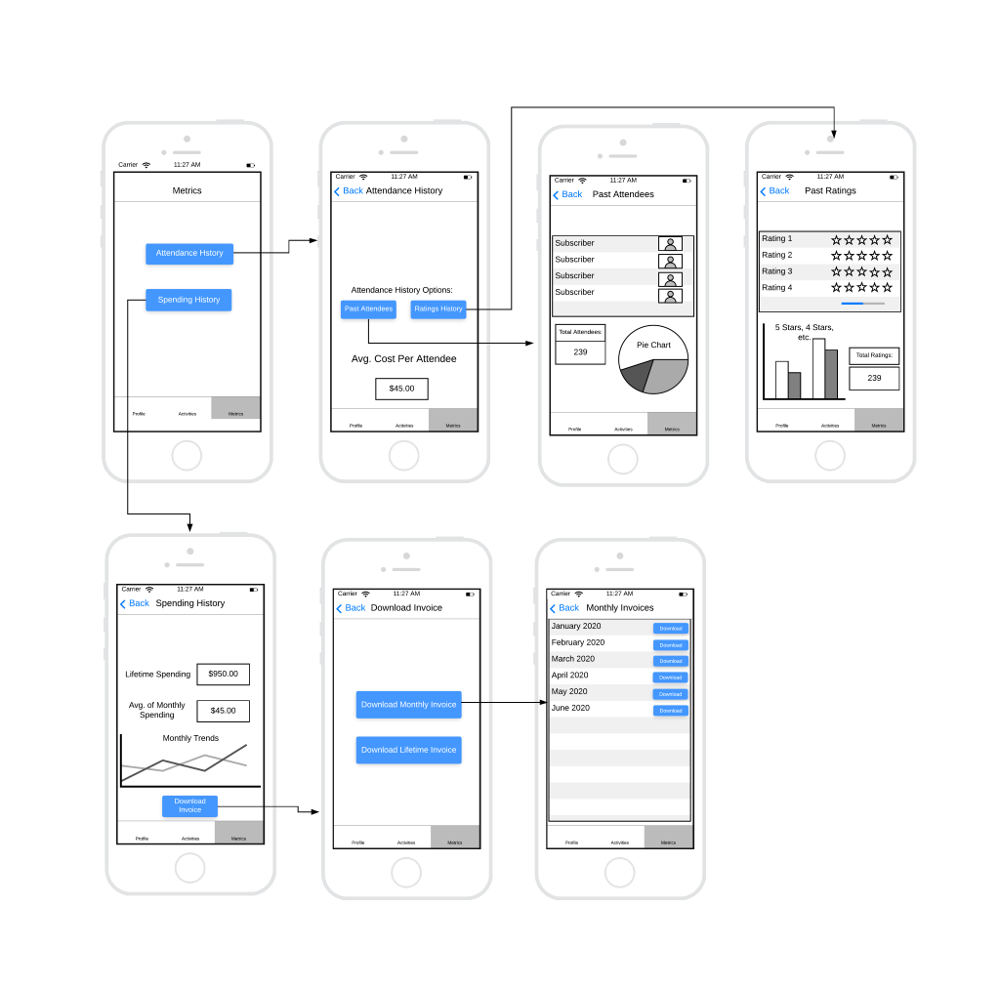
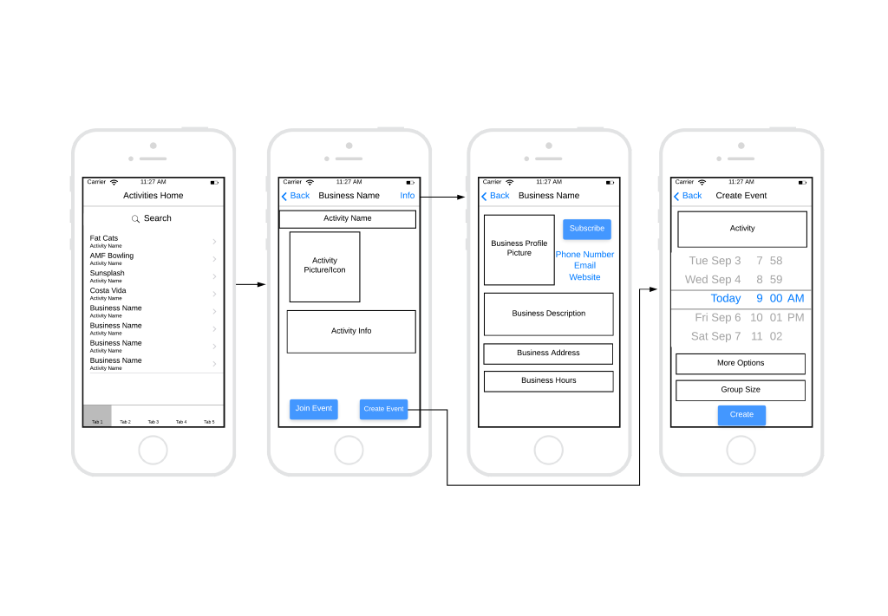

Software prototyping is a critical part of the software engineering process. Software prototyping is defined as a model for software development in which a prototype is built, displayed, and reworked as needed until an acceptable prototype is achieved.
Prototypes are available in many forms. Among the most popular is wireframing. Wireframing is an illustration that represents a static outline and is symbolic of a user interface. Wireframes are used to point our basic functionality while eliciting design and logic preferences from the stakeholders. [1]
Prototyping provides many different advantages. With Prototyping “you get the chance to test your product way before you actually start working on it and address any key pain points in advance.” [2] It also “helps you test your ideas early on and make changes before you and your team have done a lot of expensive work.” [2] It cuts away time that would have been wasted on bad planning or miscommunication. This is also a great way to get an impression of what the user or stakeholder on the design and flow of the product. They can give meaningful feedback to the developers, which will cause production to run smoother and quicker.
On the other hand, prototyping can be time consuming. In addition, if the designer’s “knowledge is limited, it may not be possible to estimate the difficulty degree of implementation and will cause unlimited development time.” [3]
To design a valid prototype, various preliminary decisions had to be made. This included decisions such as what type of prototype to design (ex. Low Fidelity or High Fidelity), what software to use, and the scope of the overall prototype. Since there was only one week allotted to design the prototype, it was necessary to limit the scope of the prototype rather than try to cover every possible scenario of the application. The scope was narrowed to include the entire business owner dashboard for the application, along with a minor portion to demonstrate how end-users will view published information from businesses.
Using data that was previously collected, we were able to apply it to our prototype. We were able to brainstorm and create models for our prototype that best suited what our final product would look like and how it would interact with other models and the user.
Upon completion of the prototype, the design was then sent to the sponsor for review. Any changes outlined by the sponsor were implemented before the final prototype was submitted. The data gathered from this elicitation technique will provide a clear functionality reference while writing the SRS and SDD.
Software Prototyping is defined as a model for software development in which a prototype is built, displayed and reworked as needed until an acceptable prototype is achieved.[4] Therefore, the purpose of our Software Prototype will be to build an example demonstration as part of the software development process and to give an outline of all the required information for the user interface.
The stakeholder is Jordan Hamblin. Our customers are business owners. Businesses who post on the app will be funding it.
The total time to research, plan, and report on this elicitation technique will be less than one week. The planning document will be completed by Monday, May 11th. The prototype will be drafted by Wednesday evening on May 13th, so it can be reviewed by the sponsor. The final revised report will be completed by Saturday afternoon, May 16th.
The data collected for this elicitation technique will be the finished prototype. This prototype will serve as a basis for determining further requirements for the application.
The technique for developing a wireframe is fairly straightforward. During previous weeks, requirements data was gathered through elicitation techniques such as interviews and surveys. This data will be compiled and used to determine core functionalities of the application.
From these core functionalities, ideas for necessary screens will brainstormed and written on paper. Next, actual wireframes will be created on Lucidchart with reference to the brainstormed paper concepts. The design of these wireframes will take meticulous consideration to ensure usability.
Upon completion of the wireframes, they will then be sent to the sponsor. This is a critical step of the technique, since it is requisite for the sponsor to deem the wireframes adequate for the final project.
The web tool Lucidchart will be used to design the wireframe prototypes.
We will be analyzing data such as our task analysis from last week and other data collected in previous weeks to create our prototype of the app layout. For example, the task analysis broke down the high-level goal of this app into smaller tasks and sub-tasks, all the way down to individual features. Using that information, we will be better prepared to brainstorm each screen of the app for our prototype.
From the wireframes created during this elicitation technique, a clear outline of required functionalities and screens will be presented. This will be essential during the creation of the SRS and SDD, since it will provide precise examples of required features.
In order to provide a well thought out prototype, the scope of the elicitation was required to be limited. In order to narrow the scope, we focused on the business owner side of the application.
The following data highlights main functionalities required by business owners. For practical reasons, the entire prototype will not be listed displayed here, but should be viewed at this link.
This is the first thing a business owner will see when they open the app. From here, they will be able to either log in or create an account, then navigate to different parts of the app.
This set of screens is for creating a new business account. We will require personal, business and payment information (for monthly bids). There will also be an account approval process to verify that these accounts belong to real businesses.
This is where a business will create the activity they want to share. Created activities will be available for users to create events with and will be able to be bid on by the creator.
These screens are where the business owner will manage promoting their activity. They will be able to see and take part in monthly bids and share their activity.
On these screens, business owners will be able to see different data about their activities, events and attendees for their activities, ratings, and spending.
These screens are how the end-user will interact with the business. End-users will be able to see a list of current activities, ordered by the amount each business bid for that month. Clicking one of these activities will display more details and give the option to create or join an event. Clicking ‘info’ by the business name will take the user to the business’s profile.
There are several items to note from these prototypes. First is the scope of this technique being less concerned with design, and more concerned with usability. From previous elicitation techniques, the features shown in this prototype were all previously determined to be necessary.
What Are the Advantages and Disadvantages of Prototyping, www.mockplus.com/blog/post/what-are-the-advantages-and-disadvantages-of-prototyping.
The second portion of our research (image 6) was concerned with how end-users will view information presented from business owners. This includes the main list view page, individual event views, and business profiles.
For our technique, prototyping, we were able to create a rough visual representation of what the final app will look like. To accomplish this, we took the ideas from our task analysis and created a wireframe based off the tasks that had been outlined. From there we created and organized all the screens in categories to represent how the users, both businesses and individuals, will interact with the app.
By completing our wireframe prototype, we were able to break down the features needed on each screen in order to enhance the user’s experience, and we were better able to understand the needs of the user.
We recommend the implementation of all features listed in our wireframe prototype, in connection with approval from the sponsor. For practical reasons, these features will not be listed here, but should be referenced in the correlated and raw data sections.
We conclude that although this is only a prototype of the screens in the app, it will be beneficial for the sponsor to see and the progress of the overall project.